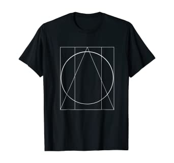
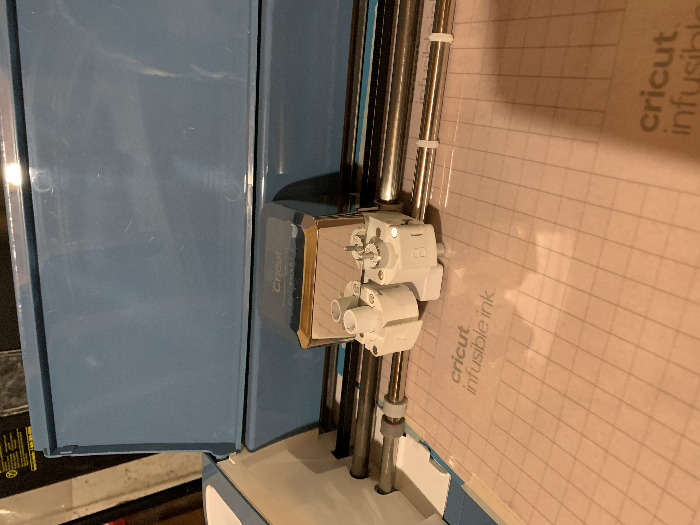

HOME
Week 9:Vinyl Cutting
Is this Digital Fabrication?

In short, the answer would be yes. Vinyl cutting is a form of digital fabrication due to the nature of the software used to design and command the machine of where to cut and how it should be cut much like the laser cutter but still vastly different.
.
When coming up with ideas for a design to put on my sweatshirt I had thought to myself "What would be a cool design that I would wear?" So I went onto google to look for ideas. Out of the design I had seen I struck a chord with simplistic designs or designs primarily with shapes such as these two
From here I dove into Adobe Illustrator to make a design utilizing a shape that I've constantly used the entire semester: Circles. I first started with a basic black circle and then decided to keep with the symmetrical theme and added two white circles and messed with them spacing it out at an equal distance. The same process applied to the two black circles added next and I ended the design with a white circle to give depth to the center. With this design, I had to add a quote that would apply to this piece. I had originally wanted to go with "Less is More" but that was too short so I went with "sometimes less is more" to fill in the character requirement. 


Again after this week, we had the issue of not being able to go to the lab but fortunately for me, I had a solution. At my house, I have a Cricut vinyl cutting machine and heat press that my mom uses for various activities. I can use this to cut and press my vinyl.
All I had to do from here is upload my design to the cricut app, find the desired viynl for my design, cut it, and press it.
No major issues arose from being at home only small ones such as accidentally cutting the vinyl upside down by misreading instructions and the scale down of the design leading to the removal of the two other circles as the lines connecting them were too frail and broke off partially. 
All I had to do now was heat press the design in additon to adding on the quote through sticker viynl. 
Considering everything that happened I'm really happy with how this came out and I think I'll do it again sometime with other designs. 
Link to the files: here